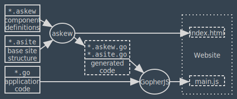

Concepts of Askew’s Language
Askew defines a metalanguage based on HTML in which you define the structure of your UI components and the main site. Basically, you write normal HTML and at certain points you can insert non-HTML elements or attributes that are understood and processed by Askew. This metalanguage is also named Askew.
In Askew, a UI component is a type whose instances can be inserted at certain predefined locations in the structure of your website. They behave similarly to widgets in typical GUI libraries. UI components are defined by the user, there are no predefined components. The internal HTML used by a component is defined with Askew.
To use your components, you must define the site which contains them. A site is a single HTML document and is also written in Askew.
The build process of an Askew-based web application is as follows:

You process all component definitions (*.askew) and the site definition (*.asite) with the askew command line utility, which gives you generated Go source files.
Then you write your application code in Go; this includes adding handlers you declared in your Askew files, for example for handling certain DOM events.
Finally, you compile your code along with the generated code with GopherJS to JavaScript, and that, along with the HTML file generated by Askew, is your website.
(WASM support is not yet implemented.)
The main *.asite file
Askew allows you to have multiple *.asite files in your module as long as they belong to different modules.
Each *.asite generates an HTML file and for multiple *.asite files, you probably want to also have different main functions per site.
We assume here that you have a single *.asite file.
An *.asite is processed as HTML document.
It must begin with <!doctype html> and contain a single root element named <a:site>.
That element replaces the usual <html> top element of an HTML site and will be rewritten as such when it is processed.
This would be a minimal valid *.asite file:
<!doctype html>
<a:site lang="en">
<head>
<title>Test</title>
</head>
<body>
<p>Hello, World!</p>
</body>
</a:site>
As you can see, you can use <html>’s attributes with <a:site>.
Besides those, there are some Askew-specific attributes you can set:
a:htmlfile: The name of the output HTML file. Defaults toindex.html.a:jspath: The path to the JavaScript file created via GopherJS. Defaults tomain.js.a:wasmexecpath: The path to Go’swasm_exec.js. This is required runtime support when compiling Go to WASM. you need to make it available at the specified path when using the WASM backend.a:wasmpath: The path to the WASM file created when compiling Go to WASM.
The HTML file will be created in the output directory specified as option of the askew command.
The JavaScript path will be written as-is into a <script> tag’s src attribute, as will the path to wasm_exec.js.
The path to the WASM file will be loaded via fetch.
Since Askew does call neither GopherJS nor Go’s WASM compiler for you, it is your responsibility to provide the .js and .wasm files at the given path.
The generated <script> element will be appended to the end of the <body> element’s content.
Packages and Imports
Askew uses Go’s concept of packages, i.e. any files in a certain directory are considered to be part of the package defined by that directory.
By default, it is assumed that the package’s name equals the directory’s name.
You can override this by specifying a <a:package> element, e.g.
<!doctype html>
<a:site lang="en">
<a:package>main</a:package>
<!-- ... -->
</a:site>
The either explicitly or implicitly defined package name of an Askew file must match with the package name in any other Askew or Go files in the same package.
This means that <a:package> is required if the current package name differs from the directory’s name.
If you want to refer to components defined in other packages, you must import them with an <a:import> Element:
<!doctype html>
<a:site lang="en">
<a:import>
"some/package"
alias "some/other/package"
</a:import>
<!-- .. -->
</a:site>
The syntax is identical to the content of the paretheses of Go’s import statement.
Askew always implicitly imports the package github.com/flyx/askew/runtime, named askew, so you must not import a package with that name.
In an *.asite file, you must place <a:package> and <a:import> as direct children of the <a:site> element.
You can use those elements also in *.askew files, where you must place them at top level.
You can’t place them at top level in an *.asite file because the HTML parser would firmly reject that.
Embeds
As we will see in the next chapter, you will define components in *.askew files.
You use those components by embedding them via the <a:embed> element.
This element allows the following attributes:
-
name: Required, must be a valid Go identifier. The embed generates a value with this name in the generated Go file whereby it can be accessed. In an
*.asitefile, a global variable with that name will be generated; inside a component in an*.askewfile, a field with that name will be generated inside the current component type. -
type: Must have a value that resolves to a Go type that is a component. This can be either a type autogenerated from an
*.askewfile, i.e. a real component, or anyinterfacetype that derives fromaskew.Component, which is an abstract component. If not given, the default value will beaskew.Component.Embeds that are not optional or a list (see below) will be constructed at initialization time. This can only be done for real components so any embed of an abstract component must be either optional or a list.
-
value: If given, must be a Go expression that evaluates to a value implementing
askew.Componentand assignable to the type of the embed. The embed will be initialized by assigning this expression to it. May not be used on optional or list embeds, and may not be present at the same time as args. -
args: If the embed is not optional nor a list and doesn’t have a value attribute, the embed will be a component that will be constructed at initialization time using its constructor (see next chapter). If that constructor takes arguments, they must be specified via this parameter. The arguments have standard Go syntax and are comma-separated; it is recommended to use backticks for string literals to avoid HTML escape sequences. This attribute may not be present on optional or list embeds.
-
optional: Valueless attribute. If given, the embed is optional, i.e. you may place a component there any time and remove or replace it again any time.
-
list: Valueless attribute, may not be given at the same time as optional. If given, the embed is a list, i.e. you can put any number of components of the given type in there and remove them again.
-
control: Valueless attribute. Can only be used inside components, not in an
*.asitefile. Specifies that the containing component is the default controller of any component embedded here. Controllers are discussed in the next chapter.
An embed that is neither a list nor an optional is called a direct embed.
The following code shows some examples of embeds in the main site.
Note that <a:embed> is not self-closing and must be properly closed.
<!doctype html>
<a:site lang="en">
<a:import>
comps "example.com/components"
</a:import>
<head>
<title>Example</title>
</head>
<body>
<!-- A direct embed of the component named "header" which must be defined
in the same package. The component's constructor will be called with
the arguments (`Title`, `Subtitle`). -->
<a:embed name="Header" type="header" args="`Title`, `Subtitle`"></a:embed>
<nav><ul>
<!-- A list embed.
Can contain any number of components of the type "comps.NavItem",
which is defined in the package comps that has been imported above.
That type may be a component, but may also a Go interface. -->
<a:embed name="NavItems" type="comps.NavItem" list></a:embed>
</ul></nav>
<main>
<!-- The main content of the page. Has no type, which means that any
component can be put here. This requires the embed to be optional.
Initially, it will be empty. -->
<a:embed name="Content" optional></a:embed>
</main>
</body>
</a:site>
For list and optional embeds, you can explicitly construct the initial component(s) that should be contained.
You do this with the element <a:construct>, which must be put inside the <a:embed>.
<a:construct> allows the following attributes:
type: Optional, defaults to the parent<a:embed>’s type. Must be a real component, so it must be set if the parent<a:embed>’s type is abstract. If given, the value returned from the type’s constructor must be assignable to the parent<a:embed>’s type.args: Optional. Must be given if the type’s constructor takes arguments. Parses just like the<a:embed>attribute of the same name.a:if,a:for: May be used for conditional or looped constructing, see the chapter on control structures.
An optional <a:embed> may contain at most one <a:construct> which may not have a a:for, a list may contain any number of <a:construct>s, a direct embed may not contain any.
The main function
Just like with regular Go code, you must write a main function as entry point.
When compiling to WASM, this main file must not exit if you want event handlers to work.
You can call askew.KeepAlive() to do this, it is a nop when compiling with GopherJS.